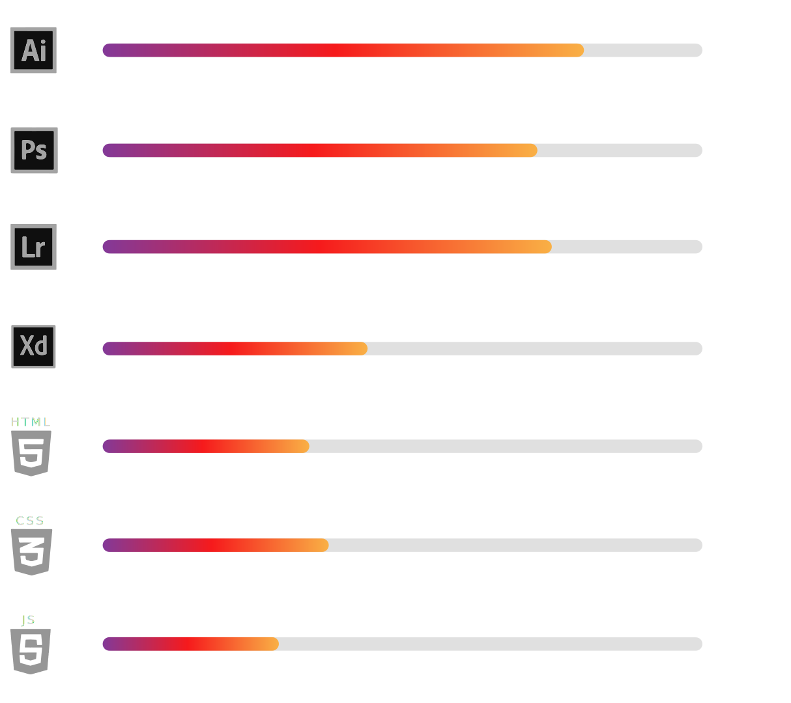

Formação acadêmica
8º período – Publicidade e Propaganda
Pontifícia Universidade Católica do Paraná -
Curitiba - Pr. 2012/2016.
3° período – Análise e Desenvolvimento
de Sistemas Universidade Positivo -
Curitiba - Pr. 2020.
Cursos de
extenção
3ds MAX 2016 Maquete Eletrônica com V-Ray
TKS
Educação Tecnologica. 2016
Lumion 3D – TKS Educação Tecnologica. 2016
UX/IX Design – Udemy (cursando). 2020
Experiência
Gráfica – Magistral Impressora LTDA – 2010.
Studio G3 Fotografia – Fotógrafo e laboratorista fotográfico 2011/2012.
Eleições – Coordenação e criação de materiais gráficos
Deputado Estadual – 2014
Zeus Comunicação – Design – 2014/2015.
Eleições – Coordenação e criação de materiais gráficos e redes sociais – Prefeitura Municipal de Fazenda Rio Grande - 2016.
Reactivehub.io – Design - 2019.
Habilidades
